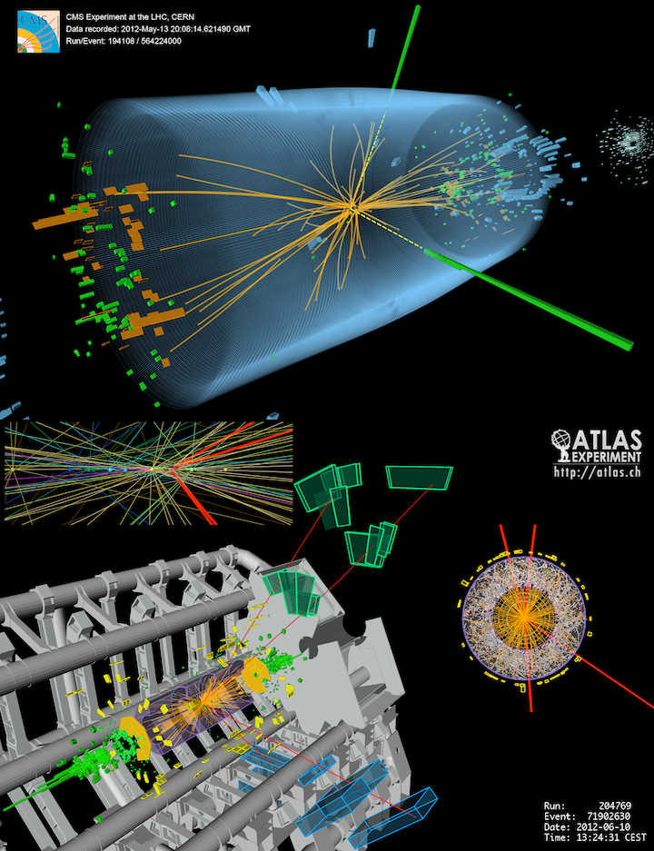
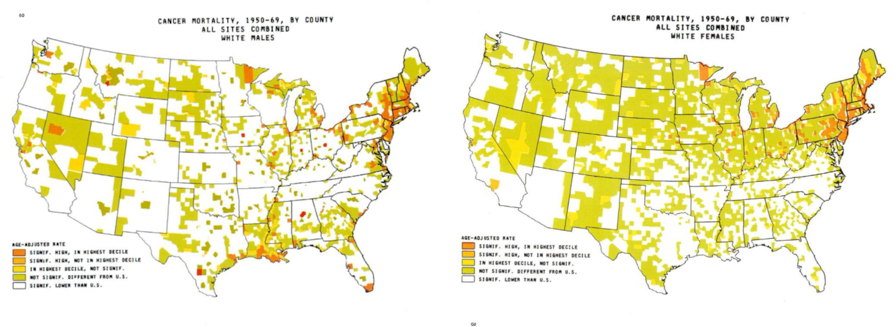
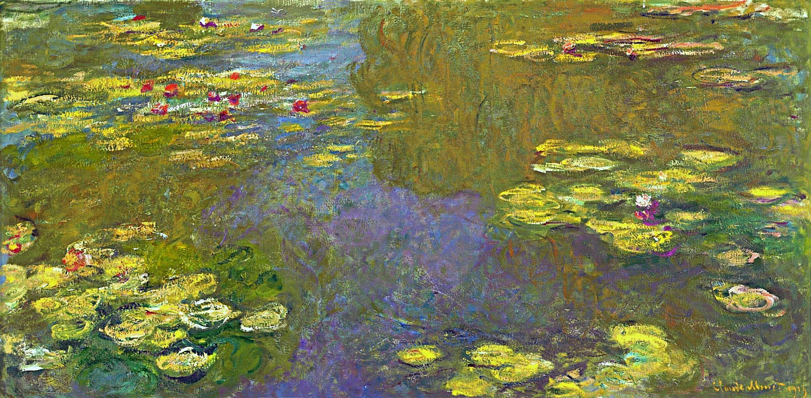
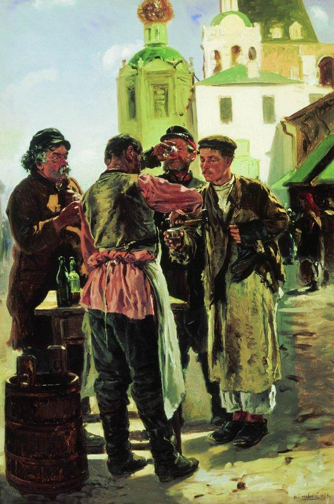
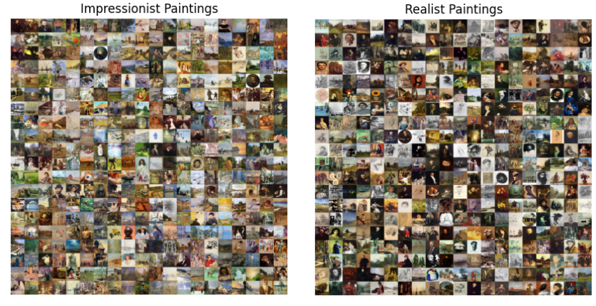
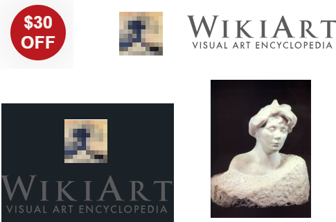
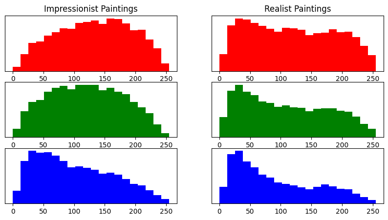
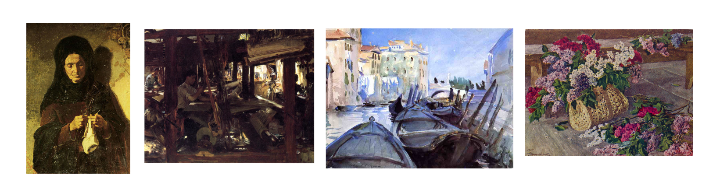

Introduction to Data Science
Intro to Data Science - Class 1
Giora Simchoni
gsimchoni@gmail.com and add #intro2ds in subject
Stat. and OR Department, TAU
What is Data Science?
What is Data Science?
It is an emerging multi-disciplinary paradigm that deals with:
- collecting, curating
- analyzing
- understanding
- modeling
- and using data to address real-world problems.

The three paradigms of data science
Components of a data science project
Defining a problem and understanding where the data to address it will come from
Collecting or generating the data
- Difference between passive data collection (e.g. downloading from the web) and active collection (e.g. doing surveys)
Components of a data science project (II)
- Organizing, understanding and presenting the data
- Visualization, mathematical modeling, probabilistic thinking
- Analyzing the data
- Statistical analysis (answering questions, performing tests)
- Building models, predictive modeling
- Results and conclusions
Example: The Higgs boson search
Example: The Higgs boson search
- Problem: finding a new particle
- The data will come from a huge particle accelator
- Data collection: measuring particles at different masses
- Data organization and understanding: need physicists, big computers, data cleaning, visualization
- Data analysis: looking for peaks in particle counts
- A statistical testing problem
- Results: Nobel prize
Example: Identifying new disease risk factors from medical health records
Atlas of Cancer Mortality for US counties, 1950-1969
Example: Identifying new disease risk factors from medical health records
- Problem
- Data collection:
- Data sources: laboratory tests, doctor visit reports, hospital records, public health statistics, imaging…
- Data cleaning: dealing with text, images, different databases, different formats
Example: Identifying new disease risk factors from medical health records
- Data organization and understanding:
- Exploratory data analysis (EDA): looking for interesting connections
- This is where the Asbestos and cancer connection happened!
- Data analysis: test hypotheses and build models
- Is the asbestos-cancer connection statsitically siginificant and consistent?
- Can we build more complex models of cancer risk given exposures?
- Results: affecting health policy
- No more asbestos use!
Class project: Paintings
Class project: Can we separate impressionist paintings from realist paintings?


Getting the data: Crawling and scraping wikiart.org
We want to get from this
To this: 
Organizing and cleaning the data
- Junk images

- How much storage do we need?
- For example: 100,000 images x (1000 x 1000 x 3) pixels (bytes) = 300 Gb, too much for a course like this
Understanding and visualizing the data
RGB plots
What do we learn from the peaks on the realist histrograms?
Building models
- Predictive modeling framework
- Build models on “training set” with known realist-impressionist division
- Apply the models to new data, and see how well they do
- Approaches to model building
- Traditional: Linear and logistic regression, nearest neighbor methods (“most similar image”)
- Modern: Deep learning (Convolutional Neural Nets), Boosting
Building models (II)
- Example: simplistic logistic regression
- Fitting a logistic model to color averages gives:
- Predict ‘realist’ if: \(1.28 - 0.012 \cdot \text{red} - 0.001 \cdot \text{green} + 0.004 \cdot \text{blue} > 0\)
- Accuracy of this model: 56%
How accurate can we get?
Our goal in this course will be to build a model with 75-80% accuracy on fresh test data!
Can you tell whether the following are impressionist or realist paintings?

How accurate can we get?
Solution:
Course details
- Philosophy:
- Cover all aspects and stages of data science
- Combine programming, visualization, probabilistic thinking and statistical modeling
- Required background:
- Some programming experience
- A course in (Introduction to) Probability
- A course in Calculus: integration, differentiation, finding extrema of functions
- A course in Algebra: matrices, vectors, how to do calculations with them
Course details (II)
- Environment:
- Our programming will be done in Python, using Notebooks
- Using Google Colab through a browser – you do not need to install anything on your computer
- Alternative: Using Jupyter notebooks for those who have them